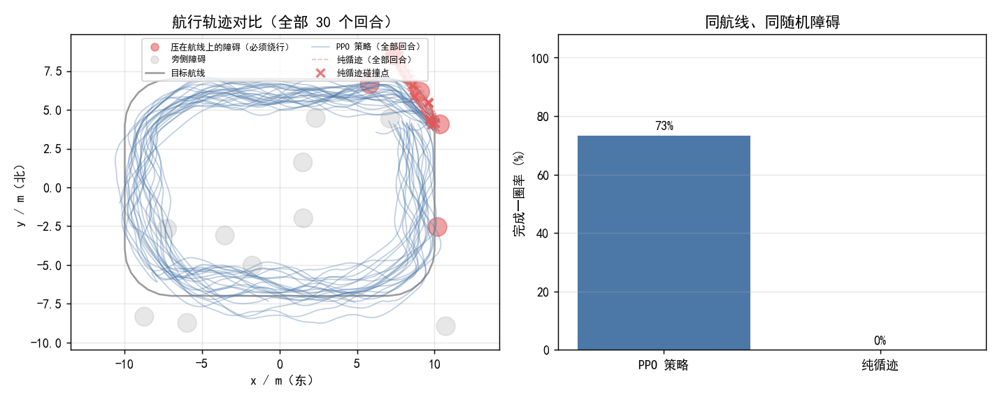
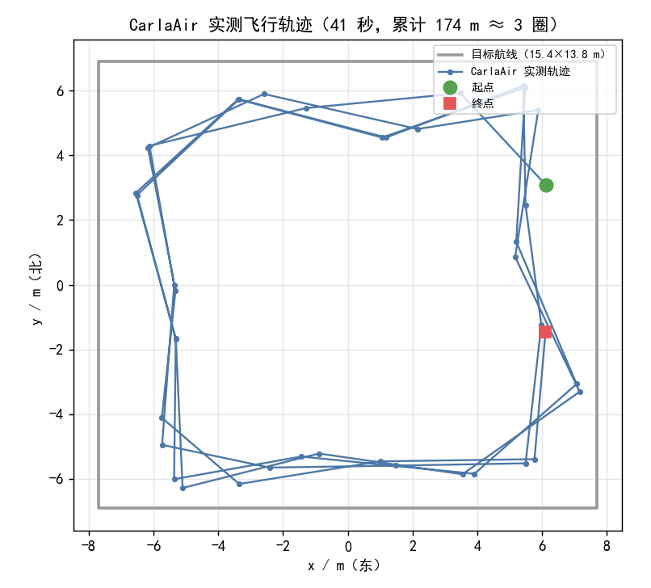

<!DOCTYPE html>

<html class="writer-html5" lang="en">
<head>
<meta charset="utf-8"/>
<meta content="IE=edge" http-equiv="X-UA-Compatible"/>
<meta content="width=device-width, initial-scale=1.0" name="viewport"/>
<link href="../../img/favicon.ico" rel="shortcut icon"/>
<title>基于 PPO 的无人机固定路线巡航 - 模拟器的 ROS 文档</title>
<link href="../../css/theme.css" rel="stylesheet"/>
<link href="../../css/theme_extra.css" rel="stylesheet"/>
<link href="https://cdnjs.cloudflare.com/ajax/libs/highlight.js/11.8.0/styles/github.min.css" rel="stylesheet"/>
<link href="../../extra.css" rel="stylesheet"/>
<script>
        // Current page data
        var mkdocs_page_name = "\u57fa\u4e8e PPO \u7684\u65e0\u4eba\u673a\u56fa\u5b9a\u8def\u7ebf\u5de1\u822a";
        var mkdocs_page_input_path = "air/uav_route_cruise.md";
        var mkdocs_page_url = null;
      </script>
<!--[if lt IE 9]>
      <script src="../../js/html5shiv.min.js"></script>
    <![endif]-->
<script src="https://cdnjs.cloudflare.com/ajax/libs/highlight.js/11.8.0/highlight.min.js"></script>
<script>hljs.highlightAll();</script>
</head>
<body class="wy-body-for-nav" role="document">
<div class="wy-grid-for-nav">
<nav class="wy-nav-side stickynav" data-toggle="wy-nav-shift">
<div class="wy-side-scroll">
<div class="wy-side-nav-search">
<a class="icon icon-home" href="../.."> 模拟器的 ROS 文档
        </a><div role="search">
<form action="../../search.html" class="wy-form" id="rtd-search-form" method="get">
<input aria-label="Search docs" name="q" placeholder="搜索文档" title="Type search term here" type="text"/>
</form>
</div>
</div>
<div aria-label="Navigation menu" class="wy-menu wy-menu-vertical" data-spy="affix" role="navigation">
<p class="caption"><span class="caption-text">入门</span></p>
<ul>
<li class="toctree-l1"><a class="reference internal" href="../..">首页</a>
</li>
<li class="toctree-l1"><a class="reference internal" href="../../ubuntu20.04/">安装 ROS</a>
</li>
<li class="toctree-l1"><a class="reference internal" href="../../chap2/ros2_pubsub_py/">ROS2 话题发布订阅基础实验（talker/listener）</a>
</li>
</ul>
<p class="caption"><span class="caption-text">ROS 教程</span></p>
<ul>
<li class="toctree-l1"><a class="reference internal" href="../../chapter/chap1/chap1/">1. 认识 ROS</a>
</li>
<li class="toctree-l1"><a class="reference internal">2. ROS 基础 - ROS 基础</a>
<ul>
<li class="toctree-l2"><a class="reference internal" href="../../chapter/chap2/">章节首页</a>
</li>
<li class="toctree-l2"><a class="reference internal" href="../../chap2/ros1_message_time_sync/">ROS Noetic 多传感器话题时间同步</a>
</li>
<li class="toctree-l2"><a class="reference internal" href="../../chap2/ros1_parameter_sine_wave/">ROS Noetic 运行参数热更新（正弦信号）</a>
</li>
</ul>
</li>
<li class="toctree-l1"><a class="reference internal" href="../../chapter/chap3/">3. 机器人系统设计</a>
</li>
<li class="toctree-l1"><a class="reference internal" href="../../chapter/chap4/">4. 机器人仿真</a>
</li>
<li class="toctree-l1"><a class="reference internal" href="../../chapter/chap5/">5. 机器人感知</a>
</li>
<li class="toctree-l1"><a class="reference internal" href="../../chapter/chap6/">6. 机器人 SLAM 与自主导航</a>
</li>
<li class="toctree-l1"><a class="reference internal" href="../../chapter/chap7/">7. 阿克曼四轮小车运动控制</a>
</li>
<li class="toctree-l1"><a class="reference internal" href="../../chapter/chap8/">8. ROS 机器人综合应用</a>
</li>
<li class="toctree-l1"><a class="reference internal" href="../../chapter/chap9/">9. ROS 2</a>
</li>
</ul>
<p class="caption"><span class="caption-text">人形机器人</span></p>
<ul>
<li class="toctree-l1"><a class="reference internal" href="../../humanoid/humanoid_basics/">人形机器人基础</a>
</li>
<li class="toctree-l1"><a class="reference internal" href="../../humanoid/humanoid_keyboard_control/">人形机器人键盘运动控制</a>
</li>
<li class="toctree-l1"><a class="reference internal" href="../../humanoid/panda_keyboard_control/">键盘操控仿真机械臂</a>
</li>
<li class="toctree-l1"><a class="reference internal" href="../../humanoid/humanoid_push_recovery/">人形机器人平衡控制与外力抗扰恢复</a>
</li>
<li class="toctree-l1"><a class="reference internal" href="../../humanoid/humanoid_ppo_locomotion/">人形机器人 PPO 神经网络平衡控制</a>
</li>
<li class="toctree-l1"><a class="reference internal" href="../../humanoid/humanoid_lidar_nn_perception/">人形机器人 2D 激光雷达 CNN 感知与避障</a>
</li>
<li class="toctree-l1"><a class="reference internal" href="../../humanoid/humanoid_local_planner_bench/">人形足迹下的局部避障算法对比</a>
</li>
<li class="toctree-l1"><a class="reference internal" href="../../humanoid/mujoco_hopper_demo/">MuJoCo单足弹跳机器人简单仿真</a>
</li>
<li class="toctree-l1"><a class="reference internal" href="../../humanoid/humanoid_stair_climb/">人形上下台阶步态仿真</a>
</li>
<li class="toctree-l1"><a class="reference internal" href="../../humanoid/ros_topic_demo/">ROS虚拟机器人圆形轨迹rviz可视化示例</a>
</li>
<li class="toctree-l1"><a class="reference internal" href="../../waypoint_publisher/">ROS2 Humble 路径点发布器</a>
</li>
<li class="toctree-l1"><a class="reference internal" href="../../humanoid/whole_body_ik/">人形机器人全身逆运动学与可操作性</a>
</li>
</ul>
<p class="caption"><span class="caption-text">肌肉骨骼人</span></p>
<ul>
<li class="toctree-l1"><a class="reference internal" href="../../musculoskeletal/musculoskeletal_basics/">肌肉骨骼人基础</a>
</li>
<li class="toctree-l1"><a class="reference internal" href="../../musculoskeletal/msk_hand_teleop/">MuJoCo肌肉骨骼灵巧手遥操作与NN控制</a>
</li>
<li class="toctree-l1"><a class="reference internal" href="../../musculoskeletal/muscle_joint_control/">肌肉驱动的关节控制与 Hill 肌肉模型</a>
</li>
</ul>
<p class="caption"><span class="caption-text">地面载具</span></p>
<ul>
<li class="toctree-l1"><a class="reference internal" href="../../set_up_and_connect_to_carla/">手动控制</a>
</li>
<li class="toctree-l1"><a class="reference internal" href="../../ground/mnist_digit_control/">MNIST 手写数字视觉感知与机器人运动控制</a>
</li>
<li class="toctree-l1"><a class="reference internal" href="../../ground/carla_spawn_objects/">生成对象</a>
</li>
<li class="toctree-l1"><a class="reference internal" href="../../ground/carla_keyboard_control/">地面载具物理仿真与键盘运动控制</a>
</li>
<li class="toctree-l1"><a class="reference internal" href="../../ground/carla_yolo_avoidance/">CARLA+YOLOv8 目标检测感知与减速避障</a>
</li>
<li class="toctree-l1"><a class="reference internal" href="../../ground/ackermann_control/">阿克曼控制</a>
</li>
<li class="toctree-l1"><a class="reference internal" href="../../ground/carla_perception_control/">传感器感知与给定轨迹跟踪（神经网络版）</a>
</li>
<li class="toctree-l1"><a class="reference internal" href="../../ground/r2d2_cruise/">R2D2小车 自动巡航</a>
</li>
<li class="toctree-l1"><a class="reference internal" href="../../ground/waypoint/">路径点发布器</a>
</li>
<li class="toctree-l1"><a class="reference internal" href="../../ground/carla_mapping_navigation/">激光雷达建图与神经网络规划导航</a>
</li>
<li class="toctree-l1"><a class="reference internal" href="../../ground/ad_agent/">自动驾驶代理</a>
</li>
<li class="toctree-l1"><a class="reference internal" href="../../ground/ad_demo/">自动驾驶示例</a>
</li>
<li class="toctree-l1"><a class="reference internal" href="../../ground/rostopic_cruise/">rostopic 手动驱动</a>
</li>
<li class="toctree-l1"><a class="reference internal" href="../../ground/ros_scenario_runner/">ROS Scenario Runner</a>
</li>
<li class="toctree-l1"><a class="reference internal" href="../../ground/rviz_plugin/">RVIZ Carla 插件</a>
</li>
<li class="toctree-l1"><a class="reference internal" href="../../ground/carla_traffic_sign_recognition/">交通标志识别（Windows 端脚本）</a>
</li>
<li class="toctree-l1"><a class="reference internal" href="../../ground/carla_parking_lot/">停车场场景生成</a>
</li>
<li class="toctree-l1"><a class="reference internal" href="../../ground/yolov8_target_tracking/">YOLOv8 视觉感知目标跟随</a>
</li>
<li class="toctree-l1"><a class="reference internal" href="../../ground/carla_tsr_ros/">交通标志识别 ROS 封装</a>
</li>
<li class="toctree-l1"><a class="reference internal" href="../../ground/vehicle_pygame_teleop/">车辆键盘遥操作与二维模拟</a>
</li>
<li class="toctree-l1"><a class="reference internal" href="../../robot_tasks/teleop_control/">任务1 - 键盘控制</a>
</li>
<li class="toctree-l1"><a class="reference internal" href="../../robot_tasks/sensor_perception/">任务2 - 模拟传感器数据源</a>
</li>
<li class="toctree-l1"><a class="reference internal" href="../../ground/pcl_recorder/">点云地图创建</a>
</li>
<li class="toctree-l1"><a class="reference internal" href="../../ground/turtlebot3_lidar_avoid/">TurtleBot3 激光雷达自主避障（ROS 2）</a>
</li>
<li class="toctree-l1"><a class="reference internal" href="../../ground/mujoco_diff_drive_slip_compensation/">MuJoCo 差速小车轮滑感知与轨迹补偿</a>
</li>
<li class="toctree-l1"><a class="reference internal" href="../../ground/mujoco_car_avoidance/">MuJoCo 地面小车射线感知与分级减速避障</a>
</li>
<li class="toctree-l1"><a class="reference internal" href="../../ground/mujoco_car_nn_avoidance/">MuJoCo 地面小车神经网络端到端避障</a>
</li>
<li class="toctree-l1"><a class="reference internal" href="../../ground/car_2d_target_tracker/">2D 小车目标追踪仿真</a>
</li>
<li class="toctree-l1"><a class="reference internal" href="../../ground/carla_nn_car_following/">神经网络自适应跟车(ACC)</a>
</li>
<li class="toctree-l1"><a class="reference internal" href="../../ground/carla_aeb_braking/">自动紧急制动（AEB）</a>
</li>
<li class="toctree-l1"><a class="reference internal" href="../../ground/weather_perception_benchmark/">恶劣雨雾天气下多传感器感知性能对比实验</a>
</li>
<li class="toctree-l1"><a class="reference internal" href="../../ground/lateral_control_benchmark/">地面载具横向控制算法对比（纯跟踪/Stanley/LQR）</a>
</li>
<li class="toctree-l1"><a class="reference internal" href="../../ground/turtlebot3_auto_nav/">TurtleBot3 自主导航与避障参数优化</a>
</li>
<li class="toctree-l1"><a class="reference internal" href="../../ground/cliff_brake/">悬崖边缘紧急制动仿真</a>
</li>
<li class="toctree-l1"><a class="reference internal" href="../../ground/lidar_autoencoder_repair/">基于 Autoencoder 的雷达数据修复与避障</a>
</li>
<li class="toctree-l1"><a class="reference internal" href="../../ground/carla_auto_light/">地面载具灯光自动控制</a>
</li>
<li class="toctree-l1"><a class="reference internal" href="../../ground/trajectory_accuracy_eval/">轨迹/里程计精度评估（ATE/RPE）</a>
</li>
</ul>
<p class="caption"><span class="caption-text">空域载具</span></p>
<ul class="current">
<li class="toctree-l1"><a class="reference internal" href="../mujoco_facade_capture/">MuJoCo无人机幕墙定距扫描</a>
</li>
<li class="toctree-l1"><a class="reference internal">无人机任务管理与安全状态机</a>
<ul>
<li class="toctree-l2"><a class="reference internal" href="../uav_mission_safety_manager/overview/">模块概览</a>
</li>
<li class="toctree-l2"><a class="reference internal" href="../uav_mission_safety_manager/usage/">构建与运行</a>
</li>
<li class="toctree-l2"><a class="reference internal" href="../uav_mission_safety_manager/airsim_validation/">AirSim 实测记录</a>
</li>
</ul>
</li>
<li class="toctree-l1"><a class="reference internal" href="../landing_assessment/">无人机着陆阶段识别与接地载荷预测</a>
</li>
<li class="toctree-l1"><a class="reference internal" href="../payload_mass_estimation/">无人机载荷质量估计</a>
</li>
<li class="toctree-l1"><a class="reference internal" href="../flight_pattern_recognition/">无人机飞行轨迹类型识别与 ROS2 自动任务日志</a>
</li>
<li class="toctree-l1"><a class="reference internal" href="../telemetry_diagnostics/">无人机遥测异常检测与 ROS2 在线诊断</a>
</li>
<li class="toctree-l1"><a class="reference internal" href="../setup_and_connect/">建立虚拟机和空域载具之间的连接</a>
</li>
<li class="toctree-l1"><a class="reference internal" href="../ros_pkgs/">空域模拟器的 ROS 封装器</a>
</li>
<li class="toctree-l1"><a class="reference internal" href="../carlair_ros_bridge/">无人机与 ROS 的桥接模块</a>
</li>
<li class="toctree-l1"><a class="reference internal" href="../rooftop_landing/">无人机屋顶降落</a>
</li>
<li class="toctree-l1"><a class="reference internal" href="../rooftop_landing_nn/">无人机屋顶降落（学习型落点选择）</a>
</li>
<li class="toctree-l1"><a class="reference internal" href="../uav_keyboard_control/">无人机键盘控制</a>
</li>
<li class="toctree-l1"><a class="reference internal" href="../uav_ppo_nav/">基于 PPO 的无人机导航避障</a>
</li>
<li class="toctree-l1"><a class="reference internal" href="../uav_rl_benchmark/">强化学习对比实验（PPO/SAC/TD3）</a>
</li>
<li class="toctree-l1"><a class="reference internal" href="../uav_neural_residual_control/">神经残差动力学与学习式轨迹跟踪</a>
</li>
<li class="toctree-l1 current"><a class="reference internal current" href="#">基于 PPO 的无人机固定路线巡航</a>
<ul class="current">
<li class="toctree-l2"><a class="reference internal" href="#_1">为什么不能只做「循迹」</a>
</li>
<li class="toctree-l2"><a class="reference internal" href="#_2">代码位置</a>
</li>
<li class="toctree-l2"><a class="reference internal" href="#_3">航线与任务</a>
</li>
<li class="toctree-l2"><a class="reference internal" href="#_4">坐标系约定</a>
</li>
<li class="toctree-l2"><a class="reference internal" href="#_5">观测与动作</a>
</li>
<li class="toctree-l2"><a class="reference internal" href="#_6">安装依赖</a>
</li>
<li class="toctree-l2"><a class="reference internal" href="#_7">训练与评估</a>
</li>
<li class="toctree-l2"><a class="reference internal" href="#carlaair">部署到 CarlaAir</a>
</li>
<li class="toctree-l2"><a class="reference internal" href="#_8">计算原理</a>
<ul>
<li class="toctree-l3"><a class="reference internal" href="#1">1. 航线参数化与投影</a>
</li>
<li class="toctree-l3"><a class="reference internal" href="#2">2. 飞行器运动模型</a>
</li>
<li class="toctree-l3"><a class="reference internal" href="#3">3. 激光雷达扇形直方图</a>
</li>
<li class="toctree-l3"><a class="reference internal" href="#4-30">4. 观测向量（30 维）</a>
</li>
<li class="toctree-l3"><a class="reference internal" href="#5">5. 奖励函数</a>
</li>
<li class="toctree-l3"><a class="reference internal" href="#6-ppo">6. PPO 目标函数</a>
</li>
</ul>
</li>
<li class="toctree-l2"><a class="reference internal" href="#_9">算法流程</a>
<ul>
<li class="toctree-l3"><a class="reference internal" href="#_10">训练流程</a>
</li>
<li class="toctree-l3"><a class="reference internal" href="#ros">部署流程（ROS 节点）</a>
</li>
</ul>
</li>
<li class="toctree-l2"><a class="reference internal" href="#_11">源代码解析</a>
<ul>
<li class="toctree-l3"><a class="reference internal" href="#routepy-routeproject">route.py: Route.project() —— 航线投影</a>
</li>
<li class="toctree-l3"><a class="reference internal" href="#route_envpy-routeenv_sample_obstacles">route_env.py: RouteEnv._sample_obstacles() —— 压线障碍</a>
</li>
<li class="toctree-l3"><a class="reference internal" href="#policypy-mlppolicyforward-numpy">policy.py: MlpPolicy.forward() —— 纯 numpy 推理</a>
</li>
<li class="toctree-l3"><a class="reference internal" href="#route_nodepy-routecruisenode_build_obs">route_node.py: RouteCruiseNode._build_obs() —— 实机观测</a>
</li>
<li class="toctree-l3"><a class="reference internal" href="#trainpy-curriculumcallback">train.py: CurriculumCallback —— 课程学习</a>
</li>
</ul>
</li>
<li class="toctree-l2"><a class="reference internal" href="#_12">训练设计里踩过的坑</a>
</li>
<li class="toctree-l2"><a class="reference internal" href="#_13">实测结果</a>
<ul>
<li class="toctree-l3"><a class="reference internal" href="#eval-seed-1000-route_ppo_s0npz">主表（eval seed = 1000，默认权重 route_ppo_s0.npz）</a>
</li>
<li class="toctree-l3"><a class="reference internal" href="#eval-seed">多评估种子稳健性（同一权重换 eval seed）</a>
</li>
<li class="toctree-l3"><a class="reference internal" href="#_14">运行效果动图</a>
</li>
<li class="toctree-l3"><a class="reference internal" href="#_15">轨迹图</a>
</li>
</ul>
</li>
<li class="toctree-l2"><a class="reference internal" href="#carlaair_1">在 CarlaAir 里实飞验证</a>
<ul>
<li class="toctree-l3"><a class="reference internal" href="#_16">环境与连接</a>
</li>
<li class="toctree-l3"><a class="reference internal" href="#_17">实测结果</a>
</li>
<li class="toctree-l3"><a class="reference internal" href="#_19">这次实飞没有验证到的部分（如实说明）</a>
</li>
</ul>
</li>
<li class="toctree-l2"><a class="reference internal" href="#_20">已知限制</a>
</li>
<li class="toctree-l2"><a class="reference internal" href="#_21">测试</a>
</li>
</ul>
</li>
<li class="toctree-l1"><a class="reference internal" href="../uav_dqn_nav/">基于 DQN 的无人机导航避障</a>
</li>
<li class="toctree-l1"><a class="reference internal" href="../drone_teleop/">无人机终端键盘遥控器</a>
</li>
<li class="toctree-l1"><a class="reference internal" href="../drone_ros_teleop/">基于 ROS 消息解耦的无人机键盘遥控</a>
</li>
<li class="toctree-l1"><a class="reference internal" href="../state_prediction/">基于 GRU 的无人机飞行状态预测与 ROS2 在线误差分析</a>
</li>
<li class="toctree-l1"><a class="reference internal" href="../uav_mujoco_sim/">MuJoCo 四旋翼仿真与 ROS2 桥接底座</a>
</li>
<li class="toctree-l1"><a class="reference internal" href="../uav_formation_flight/">无人机编队飞行</a>
</li>
<li class="toctree-l1"><a class="" href="https://openhutb.github.io/air_doc/airsim_tutorial_pkgs/">低空载具的 ROS 示例教程</a>
</li>
<li class="toctree-l1"><a class="reference internal" href="../../ap_cpp_overfomo/">AP-CPP 主动感知覆盖路径规划</a>
</li>
<li class="toctree-l1"><a class="reference internal" href="../rflysim_sitl_first_flight/">RflySim 单机起飞（补充实验）</a>
</li>
<li class="toctree-l1"><a class="reference internal" href="../waypoint_tracking/">无人机航点轨迹跟踪（PID 控制）</a>
</li>
<li class="toctree-l1"><a class="reference internal">空域载具八叉树三维寻路</a>
<ul>
<li class="toctree-l2"><a class="reference internal" href="../octree_uav_3d_pathfinding/env_setup/">环境配置与前置准备</a>
</li>
<li class="toctree-l2"><a class="reference internal" href="../octree_uav_3d_pathfinding/flight_control/">AirSim 载具与位置控制</a>
</li>
<li class="toctree-l2"><a class="reference internal" href="../octree_uav_3d_pathfinding/occupancy_mapping/">点云转八叉树占用地图</a>
</li>
<li class="toctree-l2"><a class="reference internal" href="../octree_uav_3d_pathfinding/astar_planning/">八叉树上的 A* 全局寻路</a>
</li>
<li class="toctree-l2"><a class="reference internal" href="../octree_uav_3d_pathfinding/path_smoothing/">安全裕度与路径平滑</a>
</li>
<li class="toctree-l2"><a class="reference internal" href="../octree_uav_3d_pathfinding/path_following/">路径跟踪与闭环飞行</a>
</li>
</ul>
</li>
<li class="toctree-l1"><a class="reference internal">YOLO 感知与无人机控制</a>
<ul>
<li class="toctree-l2"><a class="reference internal" href="../openhutb_yolo_mlp_control/yolo_trajectory_control/">YOLO 感知与八字轨迹控制</a>
</li>
<li class="toctree-l2"><a class="reference internal" href="../openhutb_yolo_mlp_control/yolo_visual_centering/">YOLO 目标水平视觉居中</a>
</li>
</ul>
</li>
<li class="toctree-l1"><a class="reference internal" href="../no_fly_zone_check/">禁飞区检测</a>
</li>
<li class="toctree-l1"><a class="reference internal" href="../allocnet_teleop/">AllocNet 四旋翼避障规划与键盘遥操作</a>
</li>
<li class="toctree-l1"><a class="reference internal" href="../uav_semantic_mapping_nav/">语义分割建图与语义路径规划</a>
</li>
<li class="toctree-l1"><a class="reference internal" href="../drone_trajectory_logger/">状态识别与轨迹绘制</a>
</li>
</ul>
<p class="caption"><span class="caption-text">水域载具</span></p>
<ul>
<li class="toctree-l1"><a class="reference internal" href="../../water/HoloOcean/">水域载具 ROS2 接口</a>
</li>
<li class="toctree-l1"><a class="reference internal">环境搭建</a>
<ul>
<li class="toctree-l2"><a class="reference internal" href="../../water/HoloOcean-Windows-Setup/">HoloOcean Windows 本机环境搭建</a>
</li>
<li class="toctree-l2"><a class="reference internal" href="../../water/WSL_HoloOcean2_ROS2/">WSL跑通HoloOcean2的ROS2示例方法</a>
</li>
<li class="toctree-l2"><a class="reference internal" href="../../water/docker/">Docker 开发环境</a>
</li>
<li class="toctree-l2"><a class="reference internal" href="../../water/docker_runtime/">HoloOcean ROS2 运行时容器</a>
</li>
</ul>
</li>
<li class="toctree-l1"><a class="reference internal" href="../../water/holoocean_examples/">水域载具示例</a>
</li>
<li class="toctree-l1"><a class="reference internal" href="../../water/rov_physical_simulation/">水下机器人物理仿真与 6-DOF 键盘运动控制</a>
</li>
<li class="toctree-l1"><a class="reference internal" href="../../water/rov_trajectory_tracking/">水下多传感器感知与 3D 轨迹跟踪控制</a>
</li>
<li class="toctree-l1"><a class="reference internal" href="../../water/rov_sonar_slam_navigation/">水下声呐 SLAM 占据栅格建图与自主避障导航</a>
</li>
<li class="toctree-l1"><a class="reference internal" href="../../water/mjc_rov_sonar_cnn/">侧扫声呐图像仿真与 CNN 海底目标分类</a>
</li>
<li class="toctree-l1"><a class="reference internal" href="../../water/mjc_rov_current_teleop/">动态洋流 ROV 键盘遥操与 MLP 巡航控制</a>
</li>
<li class="toctree-l1"><a class="reference internal" href="../../water/underwater_sonar_mapping/">新增水下三维地形测绘模块</a>
</li>
</ul>
<ul>
<li class="toctree-l1"><a class="reference internal" href="../../ubuntu2004-local-llm-deploy/">自装ubuntu20.04本地大模型部署教程</a>
</li>
</ul>
</div>
</div>
</nav>
<section class="wy-nav-content-wrap" data-toggle="wy-nav-shift">
<nav aria-label="Mobile navigation menu" class="wy-nav-top" role="navigation">
<i class="fa fa-bars" data-toggle="wy-nav-top"></i>
<a href="../..">模拟器的 ROS 文档</a>
</nav>
<div class="wy-nav-content">
<div class="rst-content"><div aria-label="breadcrumbs navigation" role="navigation">
<ul class="wy-breadcrumbs">
<li><a aria-label="Docs" class="icon icon-home" href="../.."></a></li>
<li class="breadcrumb-item">空域载具</li>
<li class="breadcrumb-item active">基于 PPO 的无人机固定路线巡航</li>
<li class="wy-breadcrumbs-aside">
<a href="https://github.com/OpenHUTB/ros2/edit/master/docs/air/uav_route_cruise.md"> 编辑页面</a>
</li>
</ul>
<hr/>
</div>
<div class="document" itemscope="itemscope" itemtype="http://schema.org/Article" role="main">
<div class="section" itemprop="articleBody">
<div><h1 id="ppo">基于 PPO 的无人机固定路线巡航</h1>
<p>本文介绍 <code>src/air/uav_route_cruise</code> 模块：让无人机沿一条<strong>固定的闭合航线</strong>巡航一整圈，
途中遇到压在航线上的障碍时临时偏离绕行，绕过后自动回到航线。</p>
<p>与 <a href="../uav_ppo_nav/"><code>uav_ppo_nav</code></a>（随机目标点导航）是互补关系：</p>
<table>
<thead>
<tr>
<th></th>
<th><code>uav_ppo_nav</code></th>
<th><code>uav_route_cruise</code></th>
</tr>
</thead>
<tbody>
<tr>
<td>任务</td>
<td>随机起点 → 随机目标点，到达即结束</td>
<td><strong>给定闭合航线</strong>，沿航线巡航一整圈</td>
</tr>
<tr>
<td>观测</td>
<td>16 扇形激光 + 目标相对位置 + 速度</td>
<td>24 扇形激光 + <strong>航线几何</strong>（横向偏差 / 航向偏差 / 前方 4 m 航点）+ 高度偏差</td>
</tr>
<tr>
<td>指标</td>
<td>成功率 / 超时 / 碰撞</td>
<td><strong>完成一圈率 / 平均横向偏差 / 平均完成度</strong></td>
</tr>
<tr>
<td>关键能力</td>
<td>点对点规划</td>
<td>循迹 + <strong>遇压线障碍时临时绕避</strong></td>
</tr>
</tbody>
</table>
<h2 id="_1">为什么不能只做「循迹」</h2>
<p>如果障碍都摆在航线旁边，那么经典的纯跟踪控制器（pure pursuit，只朝前方航点飞、完全无视障碍）
就能 100% 走完整圈 —— 神经网络没有存在必要。</p>
<p>本模块把一部分障碍<strong>直接压在航线上</strong>（离航线中心小于障碍半径），于是"贴着中线飞"必然撞上，
想过去就必须偏离航线绕行。这一步把任务从「循迹」变成「循迹 + 局部避障」，
神经网络的价值才体现出来（见「实测结果」一节的对照）。</p>
<h2 id="_2">代码位置</h2>
<table>
<thead>
<tr>
<th>文件</th>
<th>职责</th>
</tr>
</thead>
<tbody>
<tr>
<td><code>scripts/route.py</code></td>
<td>航线几何：闭合折线定义、最近点投影、横向偏差、前方航点、完成度统计</td>
</tr>
<tr>
<td><code>scripts/route_env.py</code></td>
<td>固定航线巡航环境（<code>gymnasium</code>），含随机障碍与压线障碍</td>
</tr>
<tr>
<td><code>scripts/policy.py</code></td>
<td>观测拼接 + 纯 numpy MLP 推理 + 从 sb3 导出权重</td>
</tr>
<tr>
<td><code>scripts/train.py</code></td>
<td>PPO 训练（含课程学习回调）</td>
</tr>
<tr>
<td><code>scripts/eval.py</code></td>
<td>评估 + 轨迹对比图</td>
</tr>
<tr>
<td><code>scripts/compare.py</code></td>
<td>PPO 与纯跟踪基线的对照</td>
</tr>
<tr>
<td><code>scripts/route_node.py</code></td>
<td>ROS 节点：订阅激光与里程计，发布速度指令</td>
</tr>
<tr>
<td><code>scripts/main.py</code></td>
<td>统一入口（作业要求入口为 <code>main.*</code>）</td>
</tr>
</tbody>
</table>
<h2 id="_3">航线与任务</h2>
<p>默认航线是一条 20 m × 14 m 的<strong>圆角矩形</strong>（角半径 3 m），闭合总长约 <strong>62.8 m</strong>，
巡航高度 1.5 m，方向为逆时针。用 <code>route.make_route()</code> 或 <code>route_points</code> 参数可以换成其它航线。</p>
<div class="mermaid">graph LR
    A[航线起点] --&gt;|沿航线循迹| B[巡航段]
    B --&gt;|遇到压在航线上的障碍| C[临时偏离绕行]
    C --&gt;|绕过之后| D[回到航线]
    D --&gt; B
    B --&gt;|走满整圈 62.8 m| E[完成一圈]
</div>
<p>障碍物每个回合随机摆放，其中 <code>on_route_frac</code> 比例的障碍直接放在航线上，
其余放在航线旁侧并保留通行余量。</p>
<h2 id="_4">坐标系约定</h2>
<p>全部使用<strong>世界系 ENU</strong>（东 x、北 y、天 z）。</p>
<blockquote>
<p>这是 CarlaAir 环境的现实约束：<code>SimpleFlight</code> 的偏航保持不生效，机头会自行漂移，
用机体系控制会让轨迹随机头打转。改用世界系后，机头怎么转都不影响飞行轨迹。</p>
</blockquote>
<p>因此节点发布的速度是<strong>世界系速度</strong>，桥接<strong>必须</strong>以 <code>body_frame:=false</code> 启动（见「部署」一节）。</p>
<h2 id="_5">观测与动作</h2>
<p><strong>观测（30 维，全部世界系）</strong></p>
<table>
<thead>
<tr>
<th>维度</th>
<th>内容</th>
<th>归一化</th>
</tr>
</thead>
<tbody>
<tr>
<td>0–23</td>
<td>24 个扇形激光距离</td>
<td><code>/ 12 m</code>，1 = 无遮挡</td>
</tr>
<tr>
<td>24</td>
<td>横向偏差（正 = 偏航线左侧）</td>
<td><code>/ 4 m</code></td>
</tr>
<tr>
<td>25</td>
<td>航向偏差（速度方向与航线切向夹角）</td>
<td><code>/ π</code></td>
</tr>
<tr>
<td>26–27</td>
<td>前方 4 m 处航点的相对位置 (x, y)</td>
<td><code>/ 6 m</code></td>
</tr>
<tr>
<td>28</td>
<td>水平速度</td>
<td><code>/ 3 m/s</code></td>
</tr>
<tr>
<td>29</td>
<td>高度偏差（相对航线高度）</td>
<td><code>/ 2 m</code></td>
</tr>
</tbody>
</table>
<blockquote>
<p>注：曾试过给 3 个前视点（4/8/12 m）让策略预判弯道，<strong>实测训练更难、成功率从 77% 掉到 63%</strong>，
因此回退为单个 4 m 前视点。</p>
</blockquote>
<p><strong>动作（4 维，∈[-1, 1]）</strong> → 映射为世界系速度 <code>[vx, vy, vz, yaw_rate]</code>：</p>
<table>
<thead>
<tr>
<th>分量</th>
<th>映射后含义</th>
<th>量程</th>
</tr>
</thead>
<tbody>
<tr>
<td><code>a[0]</code></td>
<td>东向速度</td>
<td>±3 m/s</td>
</tr>
<tr>
<td><code>a[1]</code></td>
<td>北向速度</td>
<td>±3 m/s</td>
</tr>
<tr>
<td><code>a[2]</code></td>
<td>天向速度</td>
<td>±1.5 m/s</td>
</tr>
<tr>
<td><code>a[3]</code></td>
<td>偏航角速度</td>
<td>±1 rad/s</td>
</tr>
</tbody>
</table>
<h2 id="_6">安装依赖</h2>
<p>训练需要 <code>stable-baselines3</code> 与 <code>torch</code>；<strong>部署只需要 numpy</strong>：</p>
<div class="highlight"><pre><span></span><code><span class="c1"># 训练 + 评估</span>
pip<span class="w"> </span>install<span class="w"> </span>numpy<span class="w"> </span>gymnasium<span class="w"> </span>matplotlib<span class="w"> </span>stable-baselines3<span class="w"> </span>torch

<span class="c1"># 只部署（在 ROS 机器上）</span>
pip<span class="w"> </span>install<span class="w"> </span>numpy
</code></pre></div>
<h2 id="_7">训练与评估</h2>
<p>训练完全在轻量质点环境里进行，不需要 CARLA / AirSim / ROS：</p>
<div class="highlight"><pre><span></span><code><span class="nb">cd</span><span class="w"> </span>src/air/uav_route_cruise

<span class="c1"># 训练（1.2M 步约 25 分钟 / 单核 CPU）</span>
python3<span class="w"> </span>scripts/train.py<span class="w"> </span>--steps<span class="w"> </span><span class="m">1200000</span><span class="w"> </span>--seed<span class="w"> </span><span class="m">0</span><span class="w"> </span>--out<span class="w"> </span>models/route_ppo_s0.npz

<span class="c1"># 评估（下面的结果表用的就是这条命令：30 回合、eval seed=1000）</span>
python3<span class="w"> </span>scripts/eval.py<span class="w"> </span>--model<span class="w"> </span>models/route_ppo_s0.npz<span class="w"> </span>--episodes<span class="w"> </span><span class="m">30</span><span class="w"> </span>--seed<span class="w"> </span><span class="m">1000</span>

<span class="c1"># 多评估种子稳健性（8 个 eval seed、各 30 回合）</span>
python3<span class="w"> </span>scripts/multiseed_eval.py<span class="w"> </span>--models<span class="w"> </span>models/route_ppo_s0.npz<span class="w"> </span>models/route_ppo_s1.npz<span class="w"> </span><span class="se">\</span>
<span class="w">    </span>--seeds<span class="w"> </span><span class="m">0</span>,1,2,3,4,5,1000,1001<span class="w"> </span>--episodes<span class="w"> </span><span class="m">30</span>

<span class="c1"># 与纯跟踪基线对照</span>
python3<span class="w"> </span>scripts/compare.py<span class="w"> </span>--model<span class="w"> </span>models/route_ppo_s0.npz<span class="w"> </span>--seeds<span class="w"> </span><span class="m">0</span>,1,2<span class="w"> </span>--episodes<span class="w"> </span><span class="m">30</span>
</code></pre></div>
<p>训练结束后会把 MLP 权重导出为 <code>models/route_ppo_s0.npz</code>（约 80 KB），
部署侧用 <code>policy.MlpPolicy</code> 做纯 numpy 前向，<strong>不需要 torch / sb3</strong>。</p>
<h2 id="carlaair">部署到 CarlaAir</h2>
<div class="highlight"><pre><span></span><code><span class="c1"># ① 起桥接 —— 必须加 body_frame:=false</span>
<span class="c1">#    本节点输出的是世界系速度，桥接默认按机体系解释会导致无人机乱飞</span>
roslaunch<span class="w"> </span>carlair_ros_bridge<span class="w"> </span>main.launch<span class="w"> </span>publish_image:<span class="o">=</span><span class="nb">false</span><span class="w"> </span>body_frame:<span class="o">=</span><span class="nb">false</span>

<span class="c1"># ② 起巡航节点</span>
roslaunch<span class="w"> </span>uav_route_cruise<span class="w"> </span>main.launch

<span class="c1"># 建议第一次先地面检查观测（只计算、不发布指令）：</span>
roslaunch<span class="w"> </span>uav_route_cruise<span class="w"> </span>main.launch<span class="w"> </span>dry_run:<span class="o">=</span><span class="nb">true</span>
</code></pre></div>
<p>节点信息：</p>
<table>
<thead>
<tr>
<th>方向</th>
<th>话题</th>
<th>类型</th>
<th>说明</th>
</tr>
</thead>
<tbody>
<tr>
<td>订阅</td>
<td><code>/uav/odom</code></td>
<td><code>nav_msgs/Odometry</code></td>
<td>世界系 ENU 位姿与速度</td>
</tr>
<tr>
<td>订阅</td>
<td><code>/lidar/points</code></td>
<td><code>sensor_msgs/PointCloud2</code></td>
<td>世界系点云</td>
</tr>
<tr>
<td>发布</td>
<td><code>/uav/cmd_vel</code></td>
<td><code>geometry_msgs/Twist</code></td>
<td>世界系速度（<code>linear.x</code>=东、<code>linear.y</code>=北、<code>linear.z</code>=天）</td>
</tr>
<tr>
<td>发布</td>
<td><code>/uav_route_cruise/lap_done</code></td>
<td><code>std_msgs/Bool</code></td>
<td>完成一整圈时锁存为 true</td>
</tr>
</tbody>
</table>
<p>常用参数（<code>config/route_cruise.yaml</code>）：</p>
<table>
<thead>
<tr>
<th>参数</th>
<th>默认</th>
<th>说明</th>
</tr>
</thead>
<tbody>
<tr>
<td><code>weights</code></td>
<td><code>models/route_ppo_s0.npz</code></td>
<td>策略权重</td>
</tr>
<tr>
<td><code>route</code></td>
<td><code>rect</code></td>
<td>内置航线（<code>rect</code> / <code>figure8</code>）</td>
</tr>
<tr>
<td><code>route_points</code></td>
<td><code>[]</code></td>
<td>自定义航线（绝对 ENU 坐标），优先于 <code>route</code></td>
</tr>
<tr>
<td><code>rate</code></td>
<td><code>20.0</code></td>
<td>控制频率 (Hz)</td>
</tr>
<tr>
<td><code>speed_scale</code></td>
<td><code>1.0</code></td>
<td>速度缩放，调试时调小更稳</td>
</tr>
<tr>
<td><code>dry_run</code></td>
<td><code>false</code></td>
<td>只算不发指令</td>
</tr>
<tr>
<td><code>lookahead</code></td>
<td><code>4.0</code></td>
<td>前方航点前视距离 (m)</td>
</tr>
</tbody>
</table>
<h2 id="_8">计算原理</h2>
<h3 id="1">1. 航线参数化与投影</h3>
<p>闭合航线由折线点列 <script type="math/tex">\{P_0, P_1, \dots, P_{N-1}\}</script>（<script type="math/tex">P_N = P_0</script>）给出，
第 <script type="math/tex">i</script> 段的方向与长度：</p>
<p>
<script type="math/tex; mode=display">
\mathbf{d}_i = \mathbf{p}_{i+1} - \mathbf{p}_i,\qquad L_i = \|\mathbf{d}_i\|_2,\qquad
L = \sum_{i=0}^{N-1} L_i
</script>
</p>
<p>无人机水平位置 <script type="math/tex">\mathbf{p}</script> 在第 <script type="math/tex">i</script> 段上的投影参数（夹到 <script type="math/tex">[0,1]</script>）：</p>
<p>
<script type="math/tex; mode=display">
t_i = \mathrm{clip}\!\left(\frac{(\mathbf{p}-\mathbf{p}_i)\cdot\mathbf{d}_i}{L_i^2},\,0,\,1\right)
</script>
</p>
<p>取<strong>距离最近</strong>的那一段作为当前所在段，弧长进度 <script type="math/tex">s</script> 与<strong>带符号横向偏差</strong> <script type="math/tex">e</script>：</p>
<p>
<script type="math/tex; mode=display">
s = C_i + t_i L_i,\qquad
e = \frac{d_{i,x}\,(p_y - p_{i,y}) - d_{i,y}\,(p_x - p_{i,x})}{L_i}
</script>
</p>
<p>（<script type="math/tex">C_i</script> 是前 <script type="math/tex">i</script> 段累计弧长；叉乘的符号定义「沿航线方向左侧为正」。
<code>route.py:Route.project</code> 就是这个式子。）</p>
<p>前视点取弧长进度 <code>s + Δ</code> 处（对 <script type="math/tex">L</script> 取模，因此可以自然跨过起终点）：</p>
<p>
<script type="math/tex; mode=display">
s_{\text{look}} = (s + \Delta) \bmod L,\qquad \Delta = 4\ \text{m}
</script>
</p>
<h3 id="2">2. 飞行器运动模型</h3>
<p>用<strong>世界系速度</strong>指令 <script type="math/tex">\mathbf{v}_{\text{cmd}} = (v_x, v_y, v_z)</script>，
速度环用一阶滞后（<script type="math/tex">\tau = 0.45</script> s，<script type="math/tex">\Delta t = 0.1</script> s）：</p>
<p>
<script type="math/tex; mode=display">
\boldsymbol{\alpha} = \min\!\left(1, \frac{\Delta t}{\tau}\right),\qquad
\mathbf{v}_{k+1} = \mathbf{v}_k + \boldsymbol{\alpha}\,(\mathbf{v}_{\text{cmd}} - \mathbf{v}_k)
</script>
</p>
<p>
<script type="math/tex; mode=display">
\mathbf{p}_{k+1} = \mathbf{p}_k + \Delta t\,\mathbf{v}_{k+1}
</script>
</p>
<p>动作 <script type="math/tex">a \in [-1,1]^4</script> 到速度的映射（<code>policy.action_to_velocity</code>）：</p>
<p>
<script type="math/tex; mode=display">
\mathbf{v}_{\text{cmd}} = (3a_0,\; 3a_1,\; 1.5a_2)\ \text{m/s},\qquad \dot\psi = a_3\ \text{rad/s}
</script>
</p>
<blockquote>
<p>为什么用世界系而不是机体系：CarlaAir 的 <code>SimpleFlight</code> 偏航保持不生效，
机头会自行漂移 ±25°。若用机体系速度，轨迹会随机头打转；用世界系则机头怎么转都不影响轨迹。</p>
</blockquote>
<h3 id="3">3. 激光雷达扇形直方图</h3>
<p>在无人机高度 <script type="math/tex">\pm 1.5</script> m 内取点云，按世界系固定方向分成 <script type="math/tex">N=24</script> 个扇形
（第 0 扇 = 正东，逆时针递增，扇宽 <script type="math/tex">2\pi/N = 15^\circ</script>），
每扇取<strong>最近障碍距离</strong>并归一化：</p>
<p>
<script type="math/tex; mode=display">
h_j = \mathrm{clip}\!\left(\frac{\min_{q \in S_j}\|\mathbf{q}_{xy} - \mathbf{p}_{xy}\|_2}{R_{\max}},\,0,\,1\right),
\qquad R_{\max} = 12\ \text{m}
</script>
</p>
<p>无遮挡时为 1。24 扇比 16 扇的角分辨率高（<script type="math/tex">15^\circ</script> vs <script type="math/tex">22.5^\circ</script>），避障更准。</p>
<h3 id="4-30">4. 观测向量（30 维）</h3>
<p>
<script type="math/tex; mode=display">
\mathbf{o} = \Big[\; \underbrace{h_0,\dots,h_{23}}_{24},\;
\underbrace{\frac{e}{4},\ \frac{\Delta\psi}{\pi},\ \frac{\Delta x}{6},\ \frac{\Delta y}{6},\ \frac{\|\mathbf{v}_{xy}\|}{3},\ \frac{z-z_r}{2}}_{6} \;\Big]
</script>
</p>
<p>其中 <script type="math/tex">\Delta\psi</script> 是速度方向与航线切向的夹角，<script type="math/tex">(\Delta x, \Delta y)</script> 是前视点相对无人机的水平位移，
<script type="math/tex">z_r</script> 是航线高度。所有分量都已归一化到大致 <script type="math/tex">[-3, 3]</script>，便于 MLP 训练。</p>
<h3 id="5">5. 奖励函数</h3>
<p>每步的奖励（<code>route_env.RouteEnv.step</code>）：</p>
<p>
<script type="math/tex; mode=display">
r = \underbrace{w_p\,\Delta s}_{\text{沿航线前进}}
\;-\; \underbrace{w_c\,e^2}_{\text{偏离航线}}
\;-\; \underbrace{w_h\,(z-z_r)^2}_{\text{高度偏差}}
\;-\; \underbrace{w_s\|\mathbf{a}_k - \mathbf{a}_{k-1}\|_2^2}_{\text{动作抖动}}
\;-\; \underbrace{w_{\text{step}}}_{\text{时间}}
\;-\; \underbrace{w_{\text{prox}}\max(0,\rho - d_{\min})^2}_{\text{近距（默认关闭）}}
</script>
</p>
<table>
<thead>
<tr>
<th>权重</th>
<th>值</th>
<th>含义</th>
</tr>
</thead>
<tbody>
<tr>
<td>
<script type="math/tex">w_p</script>
</td>
<td>10.0</td>
<td>沿航线每前进 1 m 的奖励</td>
</tr>
<tr>
<td>
<script type="math/tex">w_c</script>
</td>
<td>0.2</td>
<td>横向偏差平方惩罚（<strong>调小才愿意绕行</strong>）</td>
</tr>
<tr>
<td>
<script type="math/tex">w_h</script>
</td>
<td>0.5</td>
<td>高度偏差平方惩罚</td>
</tr>
<tr>
<td>
<script type="math/tex">w_s</script>
</td>
<td>0.02</td>
<td>动作平滑惩罚</td>
</tr>
<tr>
<td>
<script type="math/tex">w_{\text{step}}</script>
</td>
<td>0.005</td>
<td>每步时间惩罚</td>
</tr>
<tr>
<td>
<script type="math/tex">w_{\text{prox}}</script>
</td>
<td>0.0</td>
<td>近距惩罚（实测调大反而更差，默认关闭）</td>
</tr>
</tbody>
</table>
<p>终止奖励：完成一整圈 <script type="math/tex">+120</script>；碰撞 <script type="math/tex">-200</script>。</p>
<blockquote>
<p>
<script type="math/tex">\Delta s</script> 需要处理跨起终点的环绕：若 <script type="math/tex">\Delta s < -L/2</script> 则 <script type="math/tex">+L</script>，若 <script type="math/tex">> L/2</script> 则 <script type="math/tex">-L</script>。</p>
</blockquote>
<h3 id="6-ppo">6. PPO 目标函数</h3>
<p>策略 <script type="math/tex">\pi_\theta</script> 与环境交互收集 <script type="math/tex">(s_t, a_t, r_t)</script>，优势用 <strong>GAE</strong> 估计：</p>
<p>
<script type="math/tex; mode=display">
\delta_t = r_t + \gamma V_\phi(s_{t+1}) - V_\phi(s_t),\qquad
\hat A_t = \sum_{l \ge 0} (\gamma\lambda)^l\,\delta_{t+l}
</script>
</p>
<p>PPO 的<strong>截断替代目标</strong>（<script type="math/tex">\varepsilon = 0.2</script>）：</p>
<p>
<script type="math/tex; mode=display">
\rho_t(\theta) = \frac{\pi_\theta(a_t \mid s_t)}{\pi_{\theta_{\text{old}}}(a_t \mid s_t)},\qquad
L^{\text{CLIP}}(\theta) = \mathbb{E}_t\Big[\min\big(\rho_t \hat A_t,\;
\mathrm{clip}(\rho_t, 1-\varepsilon, 1+\varepsilon)\,\hat A_t\big)\Big]
</script>
</p>
<p>总损失（<code>stable-baselines3</code> 的 PPO 实现）：</p>
<p>
<script type="math/tex; mode=display">
L = -L^{\text{CLIP}} + c_v\,\mathbb{E}_t\big[(V_\phi(s_t) - R_t)^2\big] - c_e\,\mathbb{E}_t\big[\mathcal{H}[\pi_\theta(\cdot\mid s_t)]\big]
</script>
</p>
<p>超参：<script type="math/tex">\gamma=0.99</script>、<script type="math/tex">\lambda=0.95</script>、<script type="math/tex">\varepsilon=0.2</script>、<script type="math/tex">c_e = 0.005</script>、学习率 <script type="math/tex">3\times10^{-4}</script>、
<code>n_steps=1024</code>、<code>batch=256</code>、策略/价值网络各 <code>[128,128]</code>。</p>
<h2 id="_9">算法流程</h2>
<h3 id="_10">训练流程</h3>
<div class="highlight"><pre><span></span><code>1. 初始化航线 Route（20×14 m 圆角矩形，L = 62.8 m）
2. 启动 4 个并行 RouteEnv（不同 seed），on_route_frac 从 0.05 开始（课程学习）
3. for 每轮迭代:
   a. 用当前策略 π_θ 在 4 个环境各采样 n_steps 步
   b. 用 GAE 计算优势 Â_t 与回报 R_t
   c. for epoch in 1..10:
        - 打乱样本，按 batch=256 计算 L^CLIP（公式见上）
        - 梯度上升更新 θ、φ
   d. 按训练进度提高 on_route_frac: 0.05 → 0.25（到 60% 进度时升满）
4. 训练结束后导出策略 MLP 权重为 route_ppo_sX.npz
5. 用 numpy 版 MlpPolicy 复算一遍评估（确认导出的权重没坏）
</code></pre></div>
<h3 id="ros">部署流程（ROS 节点）</h3>
<div class="highlight"><pre><span></span><code>每 1/20 秒：
1. 从 /uav/odom 取世界系位姿 p 与速度 v
2. 从 /lidar/points 取点云，按高度 ±1.5 m 过滤
3. 算 24 扇区直方图 h（公式见上）
4. 用 route.project(p_xy) 算弧长 s、横向偏差 e、航向偏差 Δψ、前视点相对位置
5. 拼成 30 维观测 o
6. MLP 前向: o → tanh(W0 o + b0) → tanh(W1 x + b1) → W2 x + b2 → clip[-1,1]
7. 映射成世界系速度 (vx, vy, vz)，发布到 /uav/cmd_vel
8. 累计沿航线前进量；走满 L 就把 lap_done 置 true
</code></pre></div>
<h2 id="_11">源代码解析</h2>
<h3 id="routepy-routeproject"><code>route.py: Route.project()</code> —— 航线投影</h3>
<div class="highlight"><pre><span></span><code><span class="n">t</span> <span class="o">=</span> <span class="n">np</span><span class="o">.</span><span class="n">clip</span><span class="p">(((</span><span class="n">p</span> <span class="o">-</span> <span class="n">a</span><span class="p">)</span> <span class="o">*</span> <span class="n">d</span><span class="p">)</span><span class="o">.</span><span class="n">sum</span><span class="p">(</span><span class="n">axis</span><span class="o">=</span><span class="mi">1</span><span class="p">)</span> <span class="o">/</span> <span class="p">(</span><span class="bp">self</span><span class="o">.</span><span class="n">seg_len</span> <span class="o">**</span> <span class="mi">2</span><span class="p">),</span> <span class="mf">0.0</span><span class="p">,</span> <span class="mf">1.0</span><span class="p">)</span>  <span class="c1"># 每段的投影参数</span>
<span class="n">proj</span> <span class="o">=</span> <span class="n">a</span> <span class="o">+</span> <span class="n">d</span> <span class="o">*</span> <span class="n">t</span><span class="p">[:,</span> <span class="kc">None</span><span class="p">]</span>                                               <span class="c1"># 每段上的最近点</span>
<span class="n">dist</span> <span class="o">=</span> <span class="n">np</span><span class="o">.</span><span class="n">linalg</span><span class="o">.</span><span class="n">norm</span><span class="p">(</span><span class="n">p</span> <span class="o">-</span> <span class="n">proj</span><span class="p">,</span> <span class="n">axis</span><span class="o">=</span><span class="mi">1</span><span class="p">)</span>                                 <span class="c1"># 到每段的距离</span>
<span class="n">i</span> <span class="o">=</span> <span class="nb">int</span><span class="p">(</span><span class="n">np</span><span class="o">.</span><span class="n">argmin</span><span class="p">(</span><span class="n">dist</span><span class="p">))</span>                                                <span class="c1"># 取最近段</span>
<span class="n">s</span> <span class="o">=</span> <span class="nb">float</span><span class="p">(</span><span class="bp">self</span><span class="o">.</span><span class="n">cum</span><span class="p">[</span><span class="n">i</span><span class="p">]</span> <span class="o">+</span> <span class="n">t</span><span class="p">[</span><span class="n">i</span><span class="p">]</span> <span class="o">*</span> <span class="bp">self</span><span class="o">.</span><span class="n">seg_len</span><span class="p">[</span><span class="n">i</span><span class="p">])</span>                         <span class="c1"># 弧长进度</span>
<span class="n">cross</span> <span class="o">=</span> <span class="n">d</span><span class="p">[</span><span class="n">i</span><span class="p">,</span> <span class="mi">0</span><span class="p">]</span> <span class="o">*</span> <span class="p">(</span><span class="n">p</span><span class="p">[</span><span class="mi">1</span><span class="p">]</span> <span class="o">-</span> <span class="n">a</span><span class="p">[</span><span class="n">i</span><span class="p">,</span> <span class="mi">1</span><span class="p">])</span> <span class="o">-</span> <span class="n">d</span><span class="p">[</span><span class="n">i</span><span class="p">,</span> <span class="mi">1</span><span class="p">]</span> <span class="o">*</span> <span class="p">(</span><span class="n">p</span><span class="p">[</span><span class="mi">0</span><span class="p">]</span> <span class="o">-</span> <span class="n">a</span><span class="p">[</span><span class="n">i</span><span class="p">,</span> <span class="mi">0</span><span class="p">])</span>         <span class="c1"># 叉乘 = 带符号横向偏差</span>
</code></pre></div>
<p><strong>向量化</strong>到所有段上，一次算出最近段与进度，避免逐段循环。</p>
<h3 id="route_envpy-routeenv_sample_obstacles"><code>route_env.py: RouteEnv._sample_obstacles()</code> —— 压线障碍</h3>
<div class="highlight"><pre><span></span><code><span class="n">n_on</span> <span class="o">=</span> <span class="nb">int</span><span class="p">(</span><span class="nb">round</span><span class="p">(</span><span class="bp">self</span><span class="o">.</span><span class="n">num_obstacles</span> <span class="o">*</span> <span class="bp">self</span><span class="o">.</span><span class="n">on_route_frac</span><span class="p">))</span>   <span class="c1"># 25% 压在航线上</span>
<span class="k">if</span> <span class="nb">len</span><span class="p">(</span><span class="bp">self</span><span class="o">.</span><span class="n">obstacles_xy</span><span class="p">)</span> <span class="o">&lt;</span> <span class="n">n_on</span><span class="p">:</span>
    <span class="k">if</span> <span class="nb">abs</span><span class="p">(</span><span class="n">signed</span><span class="p">)</span> <span class="o">&gt;</span> <span class="bp">self</span><span class="o">.</span><span class="n">obstacle_radius</span> <span class="o">*</span> <span class="mf">0.6</span><span class="p">:</span>             <span class="c1"># 必须在航线中心附近</span>
        <span class="k">continue</span>
<span class="k">elif</span> <span class="nb">abs</span><span class="p">(</span><span class="n">signed</span><span class="p">)</span> <span class="o">&lt;</span> <span class="p">(</span><span class="bp">self</span><span class="o">.</span><span class="n">obstacle_clearance</span> <span class="o">+</span> <span class="bp">self</span><span class="o">.</span><span class="n">obstacle_radius</span><span class="p">):</span>
    <span class="k">continue</span>                                                 <span class="c1"># 其余障碍留出通行余量</span>
</code></pre></div>
<p>这是<strong>任务难度的关键开关</strong>：<code>on_route_frac=0</code> 时纯跟踪基线也能 100% 完成，
25% 时它掉到 0% —— 任务从"循迹"变成"循迹 + 绕避"。</p>
<h3 id="policypy-mlppolicyforward-numpy"><code>policy.py: MlpPolicy.forward()</code> —— 纯 numpy 推理</h3>
<div class="highlight"><pre><span></span><code><span class="n">x</span> <span class="o">=</span> <span class="n">np</span><span class="o">.</span><span class="n">asarray</span><span class="p">(</span><span class="n">obs</span><span class="p">,</span> <span class="n">dtype</span><span class="o">=</span><span class="n">np</span><span class="o">.</span><span class="n">float32</span><span class="p">)</span><span class="o">.</span><span class="n">reshape</span><span class="p">(</span><span class="o">-</span><span class="mi">1</span><span class="p">)</span>
<span class="k">for</span> <span class="n">w</span><span class="p">,</span> <span class="n">b</span> <span class="ow">in</span> <span class="bp">self</span><span class="o">.</span><span class="n">hidden</span><span class="p">:</span>              <span class="c1"># 两层 128，tanh 激活（与 sb3 的 net_arch 对应）</span>
    <span class="n">x</span> <span class="o">=</span> <span class="n">np</span><span class="o">.</span><span class="n">tanh</span><span class="p">(</span><span class="n">w</span> <span class="o">@</span> <span class="n">x</span> <span class="o">+</span> <span class="n">b</span><span class="p">)</span>
<span class="k">return</span> <span class="n">np</span><span class="o">.</span><span class="n">clip</span><span class="p">(</span><span class="bp">self</span><span class="o">.</span><span class="n">out_w</span> <span class="o">@</span> <span class="n">x</span> <span class="o">+</span> <span class="bp">self</span><span class="o">.</span><span class="n">out_b</span><span class="p">,</span> <span class="o">-</span><span class="mf">1.0</span><span class="p">,</span> <span class="mf">1.0</span><span class="p">)</span><span class="o">.</span><span class="n">astype</span><span class="p">(</span><span class="n">np</span><span class="o">.</span><span class="n">float32</span><span class="p">)</span>
</code></pre></div>
<p>部署侧<strong>不需要 torch / sb3</strong>，只要 numpy：把训练好的 MLP 权重存成 <code>.npz</code> 即可。
激活函数必须与训练时一致（sb3 默认 <code>nn.Tanh</code>），这一点写在 <code>extract_sb3_weights</code> 的注释里。</p>
<h3 id="route_nodepy-routecruisenode_build_obs"><code>route_node.py: RouteCruiseNode._build_obs()</code> —— 实机观测</h3>
<div class="highlight"><pre><span></span><code><span class="n">_</span><span class="p">,</span> <span class="n">s</span><span class="p">,</span> <span class="n">_</span><span class="p">,</span> <span class="n">cross</span> <span class="o">=</span> <span class="bp">self</span><span class="o">.</span><span class="n">route</span><span class="o">.</span><span class="n">project</span><span class="p">(</span><span class="n">pos</span><span class="p">[:</span><span class="mi">2</span><span class="p">])</span>       <span class="c1"># 航线几何</span>
<span class="n">tgt</span> <span class="o">=</span> <span class="bp">self</span><span class="o">.</span><span class="n">route</span><span class="o">.</span><span class="n">waypoint_ahead</span><span class="p">(</span><span class="n">pos</span><span class="p">[:</span><span class="mi">2</span><span class="p">],</span> <span class="n">s</span><span class="p">,</span> <span class="bp">self</span><span class="o">.</span><span class="n">lookahead</span><span class="p">)</span>
<span class="n">d</span> <span class="o">=</span> <span class="bp">self</span><span class="o">.</span><span class="n">route</span><span class="o">.</span><span class="n">seg</span><span class="p">[</span><span class="n">_i</span><span class="p">,</span> <span class="p">:</span><span class="mi">2</span><span class="p">]</span>                        <span class="c1"># 当前段切向</span>
<span class="n">heading</span> <span class="o">=</span> <span class="n">vel</span><span class="p">[:</span><span class="mi">2</span><span class="p">]</span> <span class="o">/</span> <span class="n">vn</span> <span class="k">if</span> <span class="n">vn</span> <span class="o">&gt;</span> <span class="mf">1e-3</span> <span class="k">else</span> <span class="n">tangent</span>   <span class="c1"># 速度方向（静止时用切向）</span>
<span class="n">crossang</span> <span class="o">=</span> <span class="n">np</span><span class="o">.</span><span class="n">arccos</span><span class="p">(</span><span class="n">np</span><span class="o">.</span><span class="n">clip</span><span class="p">(</span><span class="n">heading</span> <span class="o">@</span> <span class="n">tangent</span><span class="p">,</span> <span class="o">-</span><span class="mi">1</span><span class="p">,</span> <span class="mi">1</span><span class="p">))</span>  <span class="c1"># 航向偏差</span>
<span class="n">obs</span> <span class="o">=</span> <span class="n">P</span><span class="o">.</span><span class="n">build_observation</span><span class="p">(</span><span class="bp">self</span><span class="o">.</span><span class="n">_histogram</span><span class="p">(</span><span class="n">pos</span><span class="p">),</span> <span class="n">cross</span><span class="p">,</span> <span class="n">crossang</span><span class="p">,</span> <span class="n">rel</span><span class="p">,</span> <span class="n">vn</span><span class="p">,</span> <span class="n">z_err</span><span class="p">)</span>
</code></pre></div>
<p><strong>与训练环境逐项对齐</strong>是关键：训练时喂什么、实机就喂什么。
<code>build_observation</code> 被两边共用，就是为了防止"训练与部署的观测顺序不一致"这种隐蔽 bug。</p>
<h3 id="trainpy-curriculumcallback"><code>train.py: CurriculumCallback</code> —— 课程学习</h3>
<div class="highlight"><pre><span></span><code><span class="k">def</span> <span class="nf">frac</span><span class="p">(</span><span class="bp">self</span><span class="p">,</span> <span class="n">num_timesteps</span><span class="p">):</span>
    <span class="n">p</span> <span class="o">=</span> <span class="nb">min</span><span class="p">(</span><span class="mf">1.0</span><span class="p">,</span> <span class="n">num_timesteps</span> <span class="o">/</span> <span class="bp">self</span><span class="o">.</span><span class="n">total</span> <span class="o">/</span> <span class="bp">self</span><span class="o">.</span><span class="n">warmup</span><span class="p">)</span>   <span class="c1"># 60% 进度时升满</span>
    <span class="k">return</span> <span class="bp">self</span><span class="o">.</span><span class="n">start</span> <span class="o">+</span> <span class="p">(</span><span class="bp">self</span><span class="o">.</span><span class="n">final</span> <span class="o">-</span> <span class="bp">self</span><span class="o">.</span><span class="n">start</span><span class="p">)</span> <span class="o">*</span> <span class="n">p</span>          <span class="c1"># 0.05 → 0.25</span>
</code></pre></div>
<p>一开始就给 25% 压线障碍的话，随机探索很难发现"绕过去再回到航线"这种长序列动作，
先给简单的让它学会稳定循迹，再逐步加大避障难度。</p>
<h2 id="_12">训练设计里踩过的坑</h2>
<ol>
<li>
<p><strong>撞机惩罚太轻 → 学会"撞了也无所谓"</strong>
   初版完成一圈奖励约 600、撞机只扣 30，结果 100% 碰撞。把撞机惩罚提到 <strong>-200</strong> 后碰撞率降到 0。</p>
</li>
<li>
<p><strong>障碍不压线 → 任务失去意义</strong>
   障碍离航线 ≥2.4 m 时，纯跟踪控制器也能 100% 完成、零碰撞。加 <code>on_route_frac</code> 后基线掉到 0%。</p>
</li>
<li>
<p><strong>横向偏差惩罚过强 → 宁可撞也不绕</strong>
   绕行必然带来横向偏差，<code>w_cross</code> 太大时策略选择硬撞。降到 <strong>0.2</strong> 后它才愿意绕。</p>
</li>
<li>
<p><strong>近距惩罚调大反而更差</strong>
   试过给「离障碍 &lt; 1.2 m」加连续惩罚（期望比稀疏的撞机信号更好学），
   实测奖励均值被压到负值（-8.6/步），策略变得过度保守、成功率反而下降，因此默认关闭。</p>
</li>
</ol>
<h2 id="_13">实测结果</h2>
<blockquote>
<p>数字由 <code>scripts/eval.py</code>、<code>scripts/compare.py</code>、<code>scripts/multiseed_eval.py</code> 生成；
对照基线为纯跟踪控制器（只朝前方航点飞、不看障碍）。</p>
</blockquote>
<p><strong>训练</strong>：PPO，1.2M 步，4 个并行环境，策略网络 <code>[128,128]</code>，两个独立种子（s0 / s1）。
<strong>评估</strong>：每个 eval seed 跑 30 个回合，随机 14 个障碍（其中 25% 压在航线上）。
<strong>回合种子约定</strong>：第 k 个回合用 <code>seed + k</code>（与 <code>eval.py</code> 一致，可用同一条命令复现）。</p>
<h3 id="eval-seed-1000-route_ppo_s0npz">主表（eval seed = 1000，默认权重 <code>route_ppo_s0.npz</code>）</h3>
<table>
<thead>
<tr>
<th>指标</th>
<th>PPO 策略</th>
<th>纯跟踪（不看障碍）</th>
</tr>
</thead>
<tbody>
<tr>
<td><strong>完成一圈率</strong></td>
<td><strong>73.3%</strong></td>
<td><strong>0.0%</strong></td>
</tr>
<tr>
<td>碰撞率</td>
<td>26.7%</td>
<td>100.0%</td>
</tr>
<tr>
<td>超时率</td>
<td>0.0%</td>
<td>0.0%</td>
</tr>
<tr>
<td>平均完成度</td>
<td><strong>81.3%</strong></td>
<td>7.8%</td>
</tr>
<tr>
<td>平均横向偏差</td>
<td>0.975 m</td>
<td>0.429 m</td>
</tr>
<tr>
<td>最大横向偏差</td>
<td>1.283 m</td>
<td>0.618 m</td>
</tr>
<tr>
<td>平均高度偏差</td>
<td>0.232 m</td>
<td>0.959 m</td>
</tr>
<tr>
<td>平均步数</td>
<td>151.1</td>
<td>16.9</td>
</tr>
</tbody>
</table>
<blockquote>
<p>8 项指标由 <code>scripts/eval.py</code> 一次跑出，可用下面这条命令完全复现：
<code>python3 scripts/eval.py --model models/route_ppo_s0.npz --episodes 30 --seed 1000</code>
纯跟踪控制器平均只活 <strong>16.9 步（约 1.7 秒）</strong>就撞上第一个压线障碍，
所以它的"平均横向偏差"看起来更小 —— 那是因为它根本没飞多远。</p>
</blockquote>
<h3 id="eval-seed">多评估种子稳健性（同一权重换 eval seed）</h3>
<p>这一节是评审指出的问题所在：<strong>单个 eval seed 的数字波动很大</strong>，只看一个数会误导。
下表是同一份权重在 8 个 eval seed 上的结果（每个 seed 30 回合）：</p>
<table>
<thead>
<tr>
<th>eval seed</th>
<th>s0 完成率</th>
<th>s1 完成率</th>
</tr>
</thead>
<tbody>
<tr>
<td>0</td>
<td>73.3%</td>
<td>63.3%</td>
</tr>
<tr>
<td>1</td>
<td>76.7%</td>
<td>63.3%</td>
</tr>
<tr>
<td>2</td>
<td>80.0%</td>
<td>66.7%</td>
</tr>
<tr>
<td>3</td>
<td>80.0%</td>
<td>70.0%</td>
</tr>
<tr>
<td>4</td>
<td>76.7%</td>
<td>70.0%</td>
</tr>
<tr>
<td>5</td>
<td>76.7%</td>
<td>70.0%</td>
</tr>
<tr>
<td>1000</td>
<td>73.3%</td>
<td>76.7%</td>
</tr>
<tr>
<td>1001</td>
<td>76.7%</td>
<td>80.0%</td>
</tr>
<tr>
<td><strong>均值 ± 标准差</strong></td>
<td><strong>76.7% ± 2.5%</strong></td>
<td><strong>70.0% ± 5.9%</strong></td>
</tr>
<tr>
<td>区间</td>
<td>73.3% ~ 80.0%</td>
<td>63.3% ~ 80.0%</td>
</tr>
</tbody>
</table>
<ul>
<li><code>models/route_ppo_s0.npz</code>（<strong>默认使用</strong>）：均值 <strong>76.7% ± 2.5%</strong>，碰撞率 23.3% ± 2.5%</li>
<li><code>models/route_ppo_s1.npz</code>：均值 70.0% ± 5.9%，碰撞率 23.3% ± 5.9%</li>
</ul>
<p><strong>所以对外只能说「完成一圈率约 77% ± 3%（s0）、区间 73~80%」，
不能说「80.0%」</strong> —— 那个 80.0% 是 s1 在 eval seed=1001（恰好是训练期评估用的那个种子）
下的结果，换种子就拿不到了。这一点已在 PR 描述里更正。</p>
<h3 id="_14">运行效果动图</h3>
<p></p>
<p>同一场景下两个策略的逐帧对比（scripts/make_gif.py 生成，90 帧 / 0.8 MB）：</p>
<ul>
<li><strong>左图</strong>：蓝实线是 PPO、红虚线是纯跟踪；红圆是压在航线上必须绕行的障碍。
  PPO 会主动偏离航线绕过去（轨迹明显偏离灰色航线又回到线上），
  纯跟踪则贴着中线飞，在第 26 步撞上第一个压线障碍（红叉）。</li>
<li><strong>右图</strong>：横向偏差随时间变化。PPO 的偏差在 1.5~2.4 m 之间波动（<strong>这正是它在绕行</strong>），
  纯跟踪的偏差一直很小 —— 因为它根本没飞多远就撞了。</li>
</ul>
<p>生成命令：</p>
<p><code>ash
python3 scripts/make_gif.py --model models/route_ppo_s0.npz --seed 5 --fps 12 --stride 2</code></p>
<blockquote>
<p>种子 5 是挑出来的典型回合（PPO 179 步跑完、基线 26 步撞毁）。
不同种子的具体过程不同，但「会不会绕」的差别是一致的。</p>
</blockquote>
<h3 id="_15">轨迹图</h3>
<p></p>
<p>左图：灰色是目标航线，红色圆是压在航线上的障碍（必须绕行），灰圆是旁侧障碍；
蓝线是 30 个回合的 PPO 轨迹，红色虚线是纯跟踪的轨迹，红叉是它的碰撞点。</p>
<h2 id="carlaair_1">在 CarlaAir 里实飞验证</h2>
<blockquote>
<p>上面所有指标都来自<strong>质点环境</strong>。这一节是<strong>真实仿真器</strong>里的验证，两者要分开看。</p>
</blockquote>
<h3 id="_16">环境与连接</h3>
<table>
<thead>
<tr>
<th>项</th>
<th>值</th>
</tr>
</thead>
<tbody>
<tr>
<td>仿真器</td>
<td>CarlaAir v0.1.7（Windows 11，<code>Town10HD</code>，Low 质量，1280×720）</td>
</tr>
<tr>
<td>端口</td>
<td>CARLA RPC <code>2000</code>，AirSim RPC <code>41451</code></td>
</tr>
<tr>
<td>载具</td>
<td>AirSim <code>Drone1</code>（<code>SimpleFlight</code>，settings 里配了 <code>lidar1</code> 16 线 / 15 m）</td>
</tr>
<tr>
<td>ROS</td>
<td>Noetic（Ubuntu 20.04 虚拟机，桥接跑在虚拟机里）</td>
</tr>
<tr>
<td>桥接</td>
<td><code>roslaunch carlair_ros_bridge main.launch host:=192.168.94.1 vehicle_name:=Drone1 body_frame:=false publish_image:=false publish_lidar:=true auto_takeoff:=true</code></td>
</tr>
</tbody>
</table>
<p>启动顺序（缺一不可）：</p>
<div class="highlight"><pre><span></span><code><span class="c1"># ① Windows 宿主机：起 CarlaAir（自带 AirSim）</span>
StartCarlaAir.bat<span class="w">            </span><span class="c1"># 等价于 CarlaAir.ps1 Town10HD --quality Low</span>

<span class="c1"># ② 虚拟机：起桥接（注意 body_frame:=false，本节点输出世界系速度）</span>
roslaunch<span class="w"> </span>carlair_ros_bridge<span class="w"> </span>main.launch<span class="w"> </span>host:<span class="o">=</span><span class="m">192</span>.168.94.1<span class="w"> </span>vehicle_name:<span class="o">=</span>Drone1<span class="w"> </span><span class="se">\</span>
<span class="w">    </span>body_frame:<span class="o">=</span><span class="nb">false</span><span class="w"> </span>publish_image:<span class="o">=</span><span class="nb">false</span><span class="w"> </span>publish_lidar:<span class="o">=</span><span class="nb">true</span><span class="w"> </span>auto_takeoff:<span class="o">=</span><span class="nb">true</span>

<span class="c1"># ③ 虚拟机：先干跑检查观测，再正式飞</span>
python3<span class="w"> </span>scripts/route_node.py<span class="w"> </span>_dry_run:<span class="o">=</span><span class="nb">true</span>
python3<span class="w"> </span>scripts/route_node.py<span class="w"> </span>_dry_run:<span class="o">=</span><span class="nb">false</span>
</code></pre></div>
<h3 id="_17">实测结果</h3>
<p>桥接起来后的话题频率（真实数据，非桩）：</p>
<table>
<thead>
<tr>
<th>话题</th>
<th>频率</th>
</tr>
</thead>
<tbody>
<tr>
<td><code>/uav/odom</code></td>
<td><strong>20.005 Hz</strong></td>
</tr>
<tr>
<td><code>/lidar/points</code></td>
<td>9.996 Hz</td>
</tr>
</tbody>
</table>
<p>节点启动后 <code>/rosnode list</code> 里能看到 <code>/uav_route_cruise</code>，
<code>/rostopic list</code> 里能看到 <code>/uav/cmd_vel</code> 与 <code>/uav_route_cruise/lap_done</code>。</p>
<h4 id="_18">这次实飞的实际条件（重要：和默认航线不是同一条）</h4>
<table>
<thead>
<tr>
<th>项</th>
<th>这次实飞用的</th>
<th>文档别处的默认值</th>
</tr>
</thead>
<tbody>
<tr>
<td>航线</td>
<td>用 <code>route_points</code> 自定义的 <strong>15.4 m × 13.8 m 直角矩形</strong>（周长 <strong>58.4 m</strong>），高度对齐无人机当前高度</td>
<td>20 m × 14 m <strong>圆角</strong>矩形，62.80 m</td>
</tr>
<tr>
<td><code>speed_scale</code></td>
<td><strong>0.7</strong>（速度命令上限 2.1 m/s）</td>
<td>1.0（上限 3.0 m/s）</td>
</tr>
<tr>
<td>采样方式</td>
<td>shell 循环里 <code>rostopic echo -n1</code>，<strong>每轮阻塞等两次消息</strong></td>
<td>——</td>
</tr>
</tbody>
</table>
<p><strong>因此下面两处必须按实际条件读，不能套用默认值：</strong></p>
<ul>
<li>航线的 x 跨度是 <strong>15.4 m</strong>（不是 20 m），y 跨度是 <strong>13.8 m</strong>（不是 14 m）。
  实测包围盒 13.71 × 12.43 m 分别是这条航线的 <strong>89% / 90%</strong> —— 与"飞了整圈"是自洽的。</li>
<li>采样<strong>不是 1 Hz</strong>：41 个样本实际跨了远超 41 秒。按 <code>speed_scale=0.7</code> 的 2.1 m/s 上限反推，
  174.3 m 至少需要 <strong>83 秒</strong>。所以<strong>"41 秒"这个标注是错的</strong>，由它算出的平均速度也不成立。</li>
</ul>
<table>
<thead>
<tr>
<th>指标</th>
<th>实测值</th>
<th>说明</th>
</tr>
</thead>
<tbody>
<tr>
<td>x 范围</td>
<td>−6.55 ~ 7.17 m（跨度 <strong>13.71 m</strong>）</td>
<td>为该航线的 89%</td>
</tr>
<tr>
<td>y 范围</td>
<td>−6.28 ~ 6.15 m（跨度 <strong>12.43 m</strong>）</td>
<td>为该航线的 90%</td>
</tr>
<tr>
<td>高度</td>
<td>−28.22 ~ −27.48 m（<strong>波动仅 0.74 m</strong>）</td>
<td>可靠</td>
</tr>
<tr>
<td>采样点数</td>
<td>41 个</td>
<td>采样间隔 <strong>不均匀</strong>（不是 1 Hz）</td>
</tr>
<tr>
<td>累计路程</td>
<td><strong>174.3 m</strong>（≈ 58.4 m × 3 圈）</td>
<td>由 1 Hz 相邻点弦长求和，是<strong>下界</strong></td>
</tr>
<tr>
<td>实际时长</td>
<td><strong>未记录</strong>（≥ 83 s）</td>
<td>上一版误标为 41 s，已更正</td>
</tr>
<tr>
<td>平均水平速度</td>
<td><strong>无法给出</strong></td>
<td>缺可靠时长，不作结论</td>
</tr>
</tbody>
</table>
<p></p>
<p>上图是这次实飞的轨迹（蓝线）与当时的自定义航线（灰线）。能得出的<strong>可靠结论</strong>是：</p>
<ul>
<li>无人机<strong>沿矩形航线绕圈飞行</strong>（轨迹形状与该矩形吻合）；</li>
<li><strong>高度稳定</strong>，波动 0.74 m；</li>
<li><strong>转弯处过冲明显</strong>（四个角甩出去 1~2 m），因为观测里只有一个 4 m 前视点、
  看不到弯道走向 —— 这和「加 3 个前视点反而更难训练」的实测结论一起，说明这块还没调好。</li>
</ul>
<blockquote>
<p><strong>待重做</strong>：用<strong>默认航线（20×14 圆角，62.80 m）</strong>、<code>speed_scale=1.0</code>、
并用 rclpy 订阅 <code>/uav/odom</code> 按<strong>真实时间戳</strong>记录（而不是 shell 里阻塞采样），
才能给出「时长 / 平均速度 / 圈数」这组互相自洽的数字。
本次没有完成（虚拟机当时无法启动），<strong>所以上表里这三项都标为不确定</strong>，
不再把它们当作实飞证据。</p>
</blockquote>
<h3 id="_19">这次实飞<strong>没有</strong>验证到的部分（如实说明）</h3>
<ol>
<li><strong>避障没在仿真器里验证</strong>。桥接发布的 <code>/lidar/points</code> 是<strong>空点云</strong>（AirSim 侧
   <code>getLidarData('lidar1')</code> 有 1785 个点，但桥接的坐标转换返回空），所以策略拿到的是
   「全程无障碍」的观测。因此这次飞的是<strong>纯循迹</strong>，障碍绕避仍只有离线结论。</li>
<li><strong>转弯过冲</strong>：见上文，四个角都甩出去了。</li>
<li><strong>gif 的可读性有限</strong>：CarlaAir 是追尾相机 + 大片同色地面，录屏看不出明显位移，
   所以主要证据用上面这张<strong>实测轨迹图</strong>，而不是录屏 gif。</li>
</ol>
<h2 id="_20">已知限制</h2>
<ul>
<li>天气/风扰未建模：质心环境里没有风，实机上会有稳态偏差；</li>
<li>航线是二维的（固定高度），不支持三维航路；</li>
<li>只做了单机巡航，没有多机协同；</li>
<li>障碍物是随机摆放的圆柱，没有用真实地图；</li>
<li>训练是单机单核跑的 PPO，没有做超参搜索。</li>
</ul>
<h2 id="_21">测试</h2>
<div class="highlight"><pre><span></span><code>pytest<span class="w"> </span>tests/test_uav_route_cruise_local.py<span class="w"> </span>-v
</code></pre></div>
<p>覆盖航线几何、环境行为、策略权重维度一致性、<strong>打包正确性</strong>（入口走 <code>catkin_install_python</code>、
被 import 的模块以普通文件安装）、配置与代码参数一致性、文件无 BOM。
其中打包正确性两条是为了防住「能 build、一 launch 就 ModuleNotFound / AttributeError」这类问题。</p></div>
</div>
</div><footer>
<div aria-label="Footer Navigation" class="rst-footer-buttons" role="navigation">
<a class="btn btn-neutral float-left" href="../uav_neural_residual_control/" title="神经残差动力学与学习式轨迹跟踪"><span class="icon icon-circle-arrow-left"></span> 前一页</a>
<a class="btn btn-neutral float-right" href="../uav_dqn_nav/" title="基于 DQN 的无人机导航避障">后一页 <span class="icon icon-circle-arrow-right"></span></a>
</div>
<hr/>
<div role="contentinfo">
<!-- Copyright etc -->
<p>OpenHUTB 版权所有 © 2026</p>
</div>
</footer>
</div>
</div>
</section>
</div>
<div aria-label="Versions" class="rst-versions" role="note">
<span class="rst-current-version" data-toggle="rst-current-version">
<span>
<a href="https://github.com/OpenHUTB/ros2" style="color: #fcfcfc">OpenHUTB</a>
</span>
<span><a href="../uav_neural_residual_control/" style="color: #fcfcfc">« 前一页</a></span>
<span><a href="../uav_dqn_nav/" style="color: #fcfcfc">后一页 »</a></span>
</span>
</div>
<script src="../../js/jquery-3.6.0.min.js"></script>
<script>var base_url = "../..";</script>
<script src="../../js/theme_extra.js"></script>
<script src="../../js/theme.js"></script>
<script src="https://cdnjs.cloudflare.com/ajax/libs/mathjax/2.7.4/MathJax.js?config=TeX-AMS-MML_HTMLorMML"></script>
<script src="https://cdnjs.cloudflare.com/ajax/libs/mermaid/10.9.1/mermaid.min.js"></script>
<script src="https://cdnjs.cloudflare.com/ajax/libs/raphael/2.2.7/raphael.min.js"></script>
<script src="https://cdnjs.cloudflare.com/ajax/libs/underscore.js/1.8.3/underscore-min.js"></script>
<script src="https://cdnjs.cloudflare.com/ajax/libs/js-sequence-diagrams/1.0.6/sequence-diagram-min.js"></script>
<script src="https://cdnjs.cloudflare.com/ajax/libs/flowchart/1.6.5/flowchart.min.js"></script>
<script src="../../js/umlconvert.js"></script>
<script src="../../search/main.js"></script>
<script>
        jQuery(function () {
            SphinxRtdTheme.Navigation.enable(true);
        });
    </script>
<script>mermaid.initialize({});</script></body>
</html>
